A family history · Broesder, Frankish and Hazenberg
Where Angus and Elke come from
Bakers from Groningen, a cattleman from the Frisian lakes, a Lincolnshire name kept for twelve generations, goldfields families, Yarra timber millers and a childhood in New Guinea. Every record found so far, gathered in one place.
Angus or Elke is at the root (switch below). Tap the small circle above anyone to reveal their parents, or tap a person to read about them. Dashed lines are links that are likely but not yet proven.
Drag to move · pinch, Ctrl + scroll or − to zoom out
Chapter one · Rory's father's side
Bakers of the Groningen clay
1755 – 1948
For more than a century the Broesders lived within a few kilometres of each other in the Oldambt, the flat clay farmland of north-east Groningen near the German border. The earliest named ancestors lived before Dutch families had fixed surnames: "Harm Derks" meant simply Harm, son of Derk. In 1780 Harm Derks, a labourer recorded as coming "from Bonda", most likely Bunde across the Dollard in East Frisia, married Anna Hindriks of Nieuw-Scheemda at Midwolda. Anna's father, Hindrik Jans Slik, had died when she was small, and she grew up with her mother Lupke Ides and a stepfather, Hindrik Harms.
Their son Hindrik Harms Broesder, born in 1782, is the first known to carry the name. In 1807 he married Eisse Tjaards of Finsterwolde, daughter of the labourer Tjaart Pieters, and their son was named Tjaard: the first of the Tjaards who run through the family to Jerry. In 1811, when the Netherlands was part of Napoleon's empire, fixed surnames became compulsory, and the family has been Broesder ever since.
1811
In the worldUnder French rule every Dutch family had to register a fixed surname. Many chose names on the spot.
Tjaard was a farmhand when he married a farm maid, Anje Jans Lewe, in 1833. Her grandfather Okke Eijlderts came from the hamlet of Eexta, and the family took Eekstra as its surname. Two generations on, Tjaard Jakob Broesder was a baker in Nieuwolda, where he and Antje Dijk raised at least nine children. By 1922 they had moved south to Zuidlaren and taken over Café "Dennenbosch", which locals called Café Broesder. Antje died in 1941, and Tjaard was still keeping the café when he died in 1948; the building still trades today as Bruin Café de Vliegh.
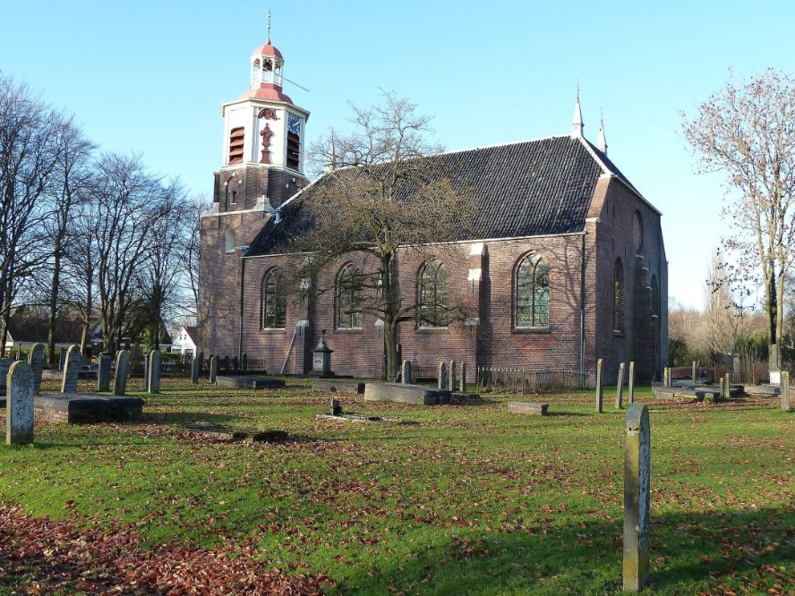
The church at Midwolda, where Hindrik Harms Broesder was baptised in 1782.Hardscarf, CC BY-SA 3.0, via Wikimedia Commons.
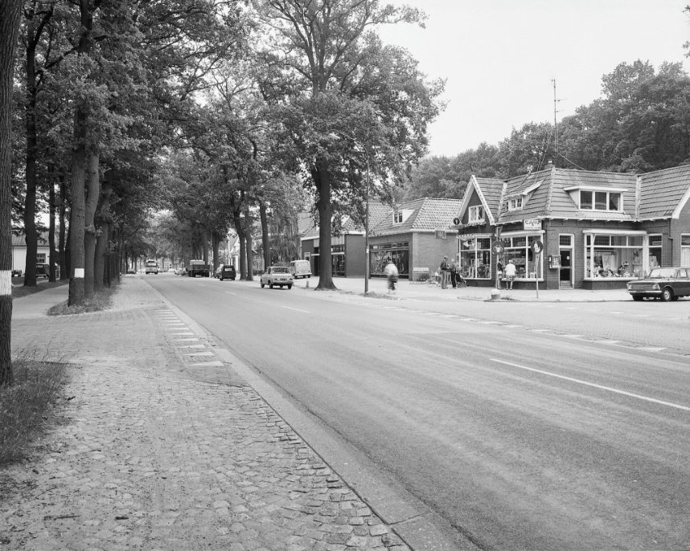
Stationsweg, Zuidlaren, in 1972; the family café stood at number 68.Loek Tangel, Rijksdienst voor het Cultureel Erfgoed, CC BY-SA 4.0.
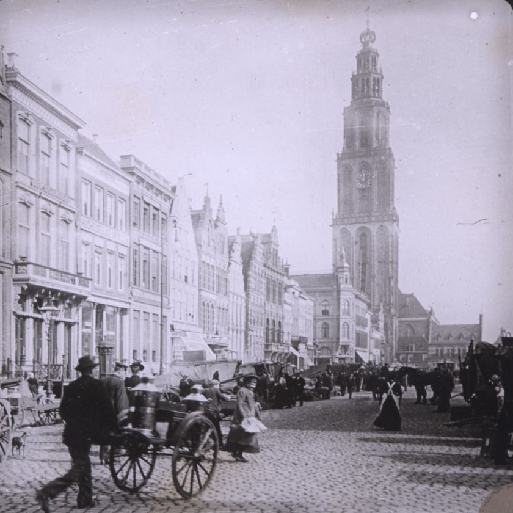
The Grote Markt and Martini tower in Groningen city, about 1900, in the years the Broesders were baking bread in Nieuwolda.Glass lantern slide, Unger & Hoffmann. Wikimedia Commons, public domain.
The records also show how close the border was. Epke Hulzebos, who married Jakob Broesder in 1866, was the granddaughter of Jan Joosten Hulzebos, a tailor born at Wymeer in East Frisia, Germany, who married at Oudeschans, just across the border, in 1800. His is one of four lines that carry Angus's roots beyond the Netherlands and Britain. The others run through a seaman from Kassel and a ship's mate from Denmark on Carla's side, and a woman from Oldenburg on the Hazenberg side.
Chapter two
A Dordrecht childhood
1902 – 1952
Jakob Tjaart Broesder, born in Nieuwolda in 1902, broke the pattern and went west to the river country around Dordrecht. There he married Grietje Cornelia de Bruijn, born in 1908 at Schelluinen near Gorinchem, where her father Leendert de Bruijn kept the inn. Leendert came from Hoornaar, a few kilometres north, where his father Willem had died at 37, leaving a widow and a young family; the de Bruijns had lived there for at least three generations. Grietje's mother, Gijsbertje de Kreij, was born at Gorinchem, the daughter of Jan Rokus de Kreij of Schelluinen and Lijntje Broere. Death records also name six of Lijntje's great-grandparents, the earliest known on this line: Pieter Broeren and Adriaantje den Braven of Noordeloos, Huibert Vogel and his wife Leentje of Hoornaar, and Huibert van der Heijden and Marrigje van Genderen of Meerkerk. Jakob and Grietje's son Tjaard Jacob, later known as Jerry, was born in Dordrecht on 2 June 1932, the youngest of three.
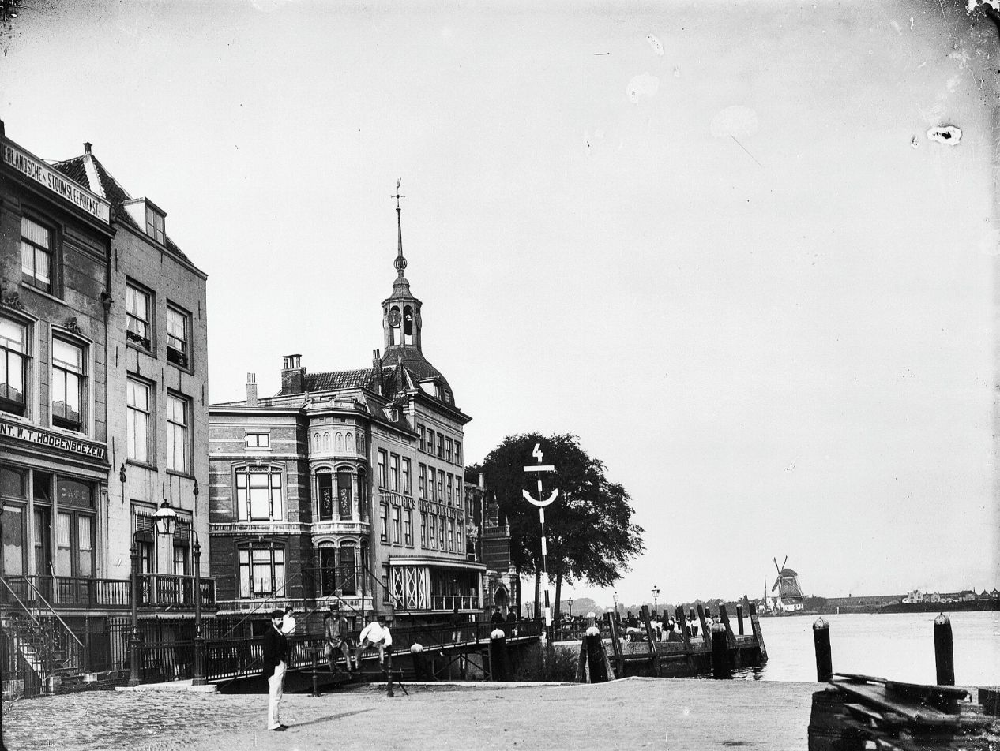
Dordrecht in 1930, two years before Jerry was born there.Rijksdienst voor het Cultureel Erfgoed, CC BY-SA 4.0, via Wikimedia Commons.
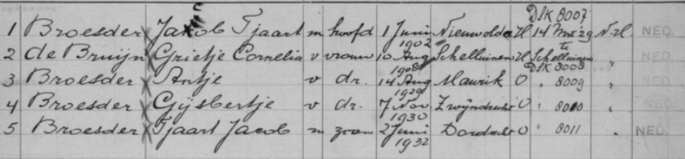
The family card from the Dordrecht population register. Line five is Tjaart Jacob, born 2 June 1932.Regionaal Archief Dordrecht, via Open Archives.
Jerry was seven when German forces invaded in May 1940, and Dordrecht itself was fought over for four days. He was twelve during the Hunger Winter of 1944–45, when food ran out in the cities of the west and people walked for days into the countryside to trade for potatoes.
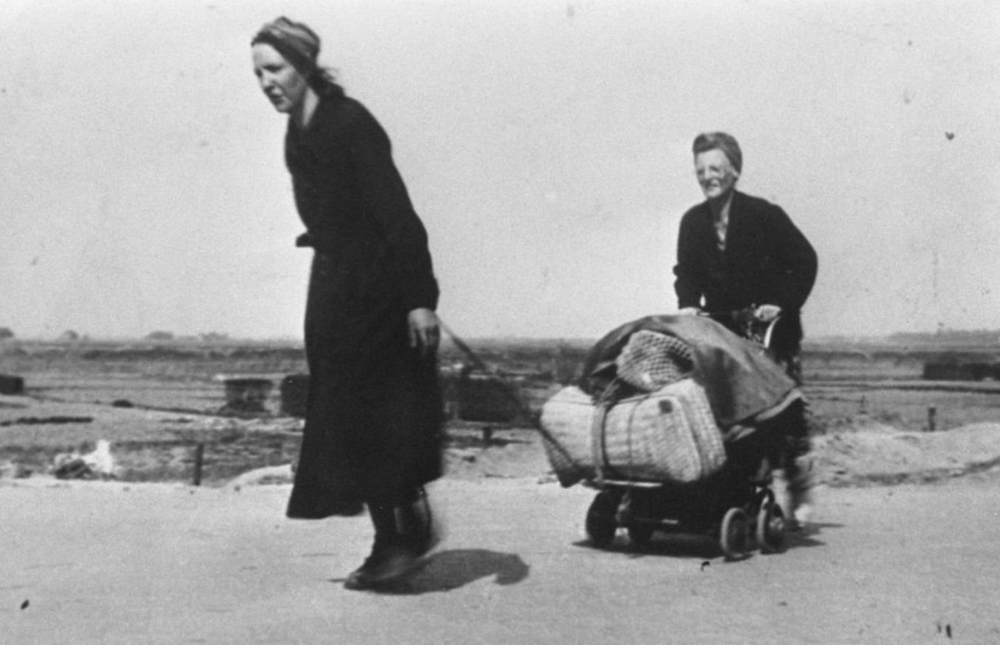
A "hunger journey" in search of food, 1944–45.Anefo, Nationaal Archief, CC BY-SA 3.0.
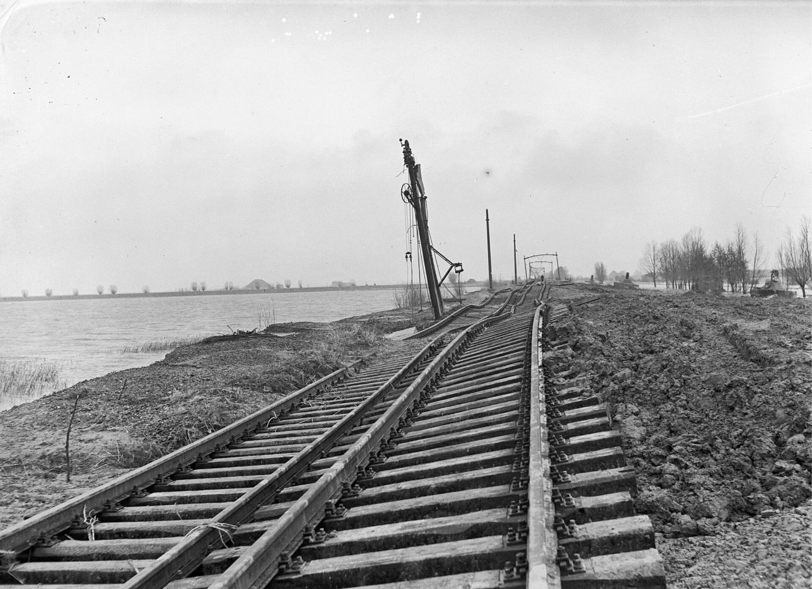
The railway near Moerdijk after the flood of February 1953, a few months after Jerry left.Het Utrechts Archief, CC BY 4.0.
Chapter three
Crossing the world
1941 – 1958
Jerry sailed at twenty, at the height of post-war Dutch emigration, under the new Netherlands–Australia Migration Agreement. His ship, the Fairsea, had been built as the American escort carrier USS Charger and was later converted to carry emigrants. He reached Sydney on 10 October 1952. His father ended his days in Australia too: Jakob Tjaart Broesder died at Nowra, on the south coast of New South Wales, in 1975.
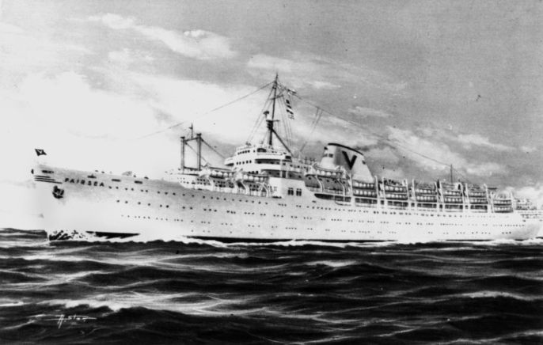
The Fairsea, the ship that brought Jerry to Australia.State Library of Queensland, public domain.
Carla Degenhart's journey began with a loss. Her father, Hendricus, was a ship's engineer who kept sailing for the Allies after the invasion. On 24 November 1941 his steamer, the SS Groenlo, was sunk by German torpedo boats in a North Sea convoy. He was 37; Carla was six. Her mother raised two children in occupied Amsterdam.
Carla flew rather than sailed, landing in Sydney on 4 November 1958 on a Dutch-registered aircraft, PH-LKW.From her migration file, National Archives of Australia
Behind her stand diamond polishers in Amsterdam, a furniture maker from Kampen, shoemakers from Tilburg and a seaman from Kassel in Germany. Jerry and Carla married in Australia and raised Diana, Greg, Monique, Robert and Yolanda in Adelaide's southern suburbs.
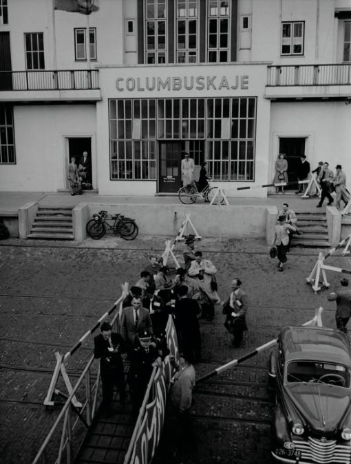
Emigrants boarding the Fairsea at Bremerhaven in 1953, the year after Jerry's voyage.Australian National Maritime Museum, no known copyright restrictions.
Chapter four · Rory's mother's side
From the Humber to the goldfields
1657 – 1964
In 1657 Virgil Frankish, a widower from Marshchapel on the Lincolnshire coast, married Mary Pinder at Caistor in north Lincolnshire. Six years earlier, in 1651, a widow called Alice Frankishe had bought a cottage at Marshchapel; how she was related to Virgil is not known. For the next two centuries the unusual name Virgil passed from father to son through the villages on the south bank of the Humber: Caistor, Frodingham, Hibaldstow, Elsham and Barrow upon Humber. Virgil Frankish married Mary Ellis at Frodingham in 1752, and their son Virgil, baptised at Hibaldstow in 1757, married Ann Hickson at Elsham thirty years later.
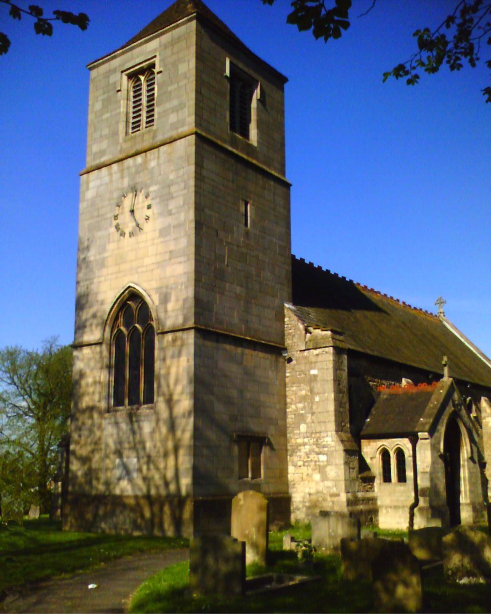
St Hybald's, Hibaldstow, where Virgil Frankish was baptised in 1757.Asterion, CC BY 2.5, via Wikimedia Commons.
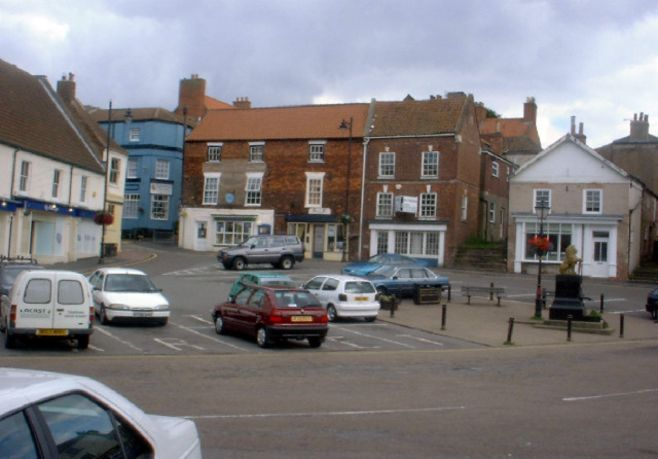
The market place at Caistor today, where the Virgils married in 1657, 1668 and 1705.David Wright, CC BY-SA 2.0, via Wikimedia Commons.
Their grandson Virgil Robert Frankish, baptised at Barrow upon Humber in 1832, crossed the Humber to the port of Hull, where he married Jane Batler in 1854. His son Thomas was born in Hull about 1863 and married a Yorkshire girl, Emily Wetherall, there in 1889. Their sons Jesse, Robert and Richard were born in Hull between 1890 and 1895; each of them carried their mother's surname, Wetherall, as a middle name.
Then they went out to Western Australia. The family tell that the WA Government Railways were bringing skilled steam engine drivers out from England. In April 1897 "Mrs Frankish and three children" landed at Albany from the mail steamer Orizaba, and by 1901 Thomas was a railwayman at Northam, the railhead for the goldfields. In July 1902, when Northam's railway men celebrated winning the eight-hour day, he answered the toast: what the men wanted, he said, was not 48 hours crammed into a few days but a true day of eight hours. Emily sat on the ladies' committee of the Railway Institute, and Walter was born at Northam in 1904. In March 1908, aged four, Walter ran across Newcastle Street in Perth, dodged one tram and was caught by the front guard of another; he spent days in Perth Hospital, and the accident made the papers.
Thomas gave a quarter of a century to the State railways. In 1921 he was sent to Kalgoorlie as sub-foreman at the locomotive sheds, and one morning at the end of May, on his way to work, he collapsed with a stroke. Emily went up from Perth to be with him; he lay unconscious for two weeks and died on 12 June, aged 58. She lived on in Mount Lawley until 1939. Her funeral notice recorded that she had been born at Marston, in Yorkshire.
Walter, their youngest, married Mona Fisk, a Kalgoorlie girl, at St George's Cathedral, Perth, at the end of 1931. Mona wore ivory embossed satin and a Brussels lace veil, with the rope of pearls Walter had given her, and after the wedding breakfast they left for Tawarri, their beach home. Walter was a civil servant, and he could sing: a bass-baritone who was the soloist in Stainer's "Crucifixion" at the cathedral on Good Friday, won a heat of the 6PR radio talent quest in 1939 with "The Smugglers' Song", and sang in the ABC's wartime opera seasons, including Marullo in "Rigoletto". Their children were Ramona (1932), Ted (1935), Lawrie (born in Perth on 24 January 1937) and Walter.
Mona was a doer too. In the war years, when plans for a free kindergarten in Victoria Park were shelved, she trained with the Kindergarten Union and ran a play centre for twenty local children in her own home at Gallipoli Street; the Western Mail gave it a full page of photographs. After the war she was secretary of the new West Australian Children's Book Council.
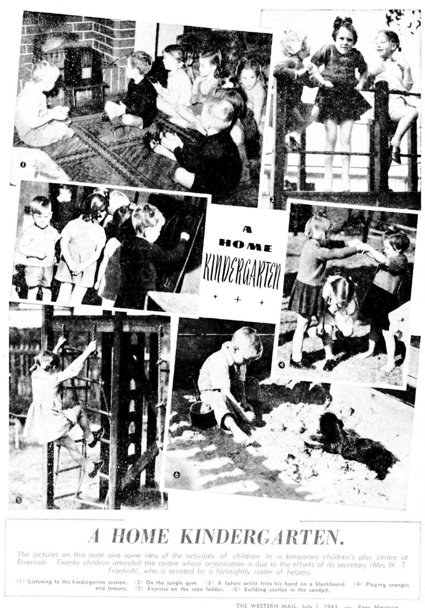
Mona's play centre at the family home in Gallipoli Street, photographed for the Western Mail, 1 July 1943.Western Mail (Perth), 1 July 1943, p. 19, via Trove.
Mona's family had followed gold too. Her mother, Matilda Anthony, was born in 1873 at Sebastopol on the Ballarat goldfield, to Herbert Anthony and Mara James, a couple whose parents carried the Welsh names Jones, Evans and James; Herbert's family very probably came from Glynamman in Carmarthenshire, where a David Anthony was a tailor in 1841. They later moved to the gold town of Stawell, where Mara died in 1893 and Herbert in 1897. Matilda went west to Kalgoorlie and married Edward Charles Fisk there in 1906; Mona was born the next year. Charlie Fisk came from a big Adelaide family. His father, John William Fisk, had come out from Suffolk on the Historia as a boy of seven in 1854 and was a plumber and painter in Pulteney Street, in the family firm of W. Fisk & Son; his mother, Elizabeth Margaret Roscorla, was the daughter of Harry Munro Roscorla, a schoolmaster's son from Lewes in Sussex, who married Sarah Ann Hindmarsh in Brighton in June 1838. In May 1839 they sailed from London on the Anna Robertson, and they reached the new colony of South Australia that September. She died in 1884, when Charlie was about five, and his father married again, so of the fourteen children some were half-brothers and half-sisters. His eldest brother William, the Glenelg chemist, was Mayor of Glenelg through the 1930s and died a member of the South Australian Parliament.
Grandpa Fisk is remembered as a character. About 1910 the family moved to Perth, where he worked at Foy's and then travelled for Beale's, the piano firm. In August 1918 Matilda divorced him, and the Daily News, the Kalgoorlie Miner and Truth all carried the case; in those days divorce was not done, and the family did not appreciate the publicity. He had been bankrupt once already, in 1917, and in January 1925 he was back in the Bankruptcy Court, ruined this time by the Oroya East gold mine, which he had taken an option over for £1 down and floated as a company. His assets were a 41 lb gold specimen and shares quoted at 4½d; among his debts was £42 to the High School for one of his boys. By then he had married again. The papers follow him through the mining fields, pegging gold leases at Meekatharra in 1922 and in 1932 running the London Mining Options and Investment Company, with options over leases at Comet Vale and Mount Jackson. The family remember him always dealing with the Mines Department, always advertising for a partner with £100 for a new venture, and seeing the future in mineral sands long before the industry arrived. With the money to start, they say, he would have made a fortune. Matilda was killed in August 1935, knocked down by a car in Hay Street, West Perth; the inquest heard she was blind in one eye. He was Charlie to his own family, and he died in Perth in June 1954, aged 75; his death notice remembered him as the father of Mona, Mrs W. Frankish of Victoria, and of Ted, in Queensland.
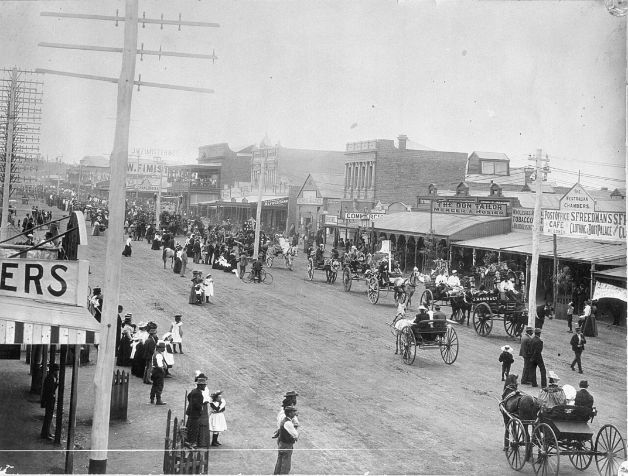
Hannan Street, Kalgoorlie, in 1901.Wikimedia Commons, public domain.
1943
A cousin in the RAAFLawrie's first cousin, Flight Sergeant Robert Frankish, was killed on 18 September 1943 and buried at Harrogate in Yorkshire, the county the Frankish name came from.
Lawrie went east first. In January 1951, from Perth Boys' School, he was one of seven Western Australian boys chosen to enter the Royal Australian Naval College at Flinders Naval Depot as a cadet midshipman. Home on his first leave that May, aged 14, he called on the Governor with three other cadets, and Sir James Mitchell, a farmer himself, joked that they should have become dairy farmers. Walter and Mona followed to Melbourne in 1952 or 1953 with Ted, Walter and Ramona.
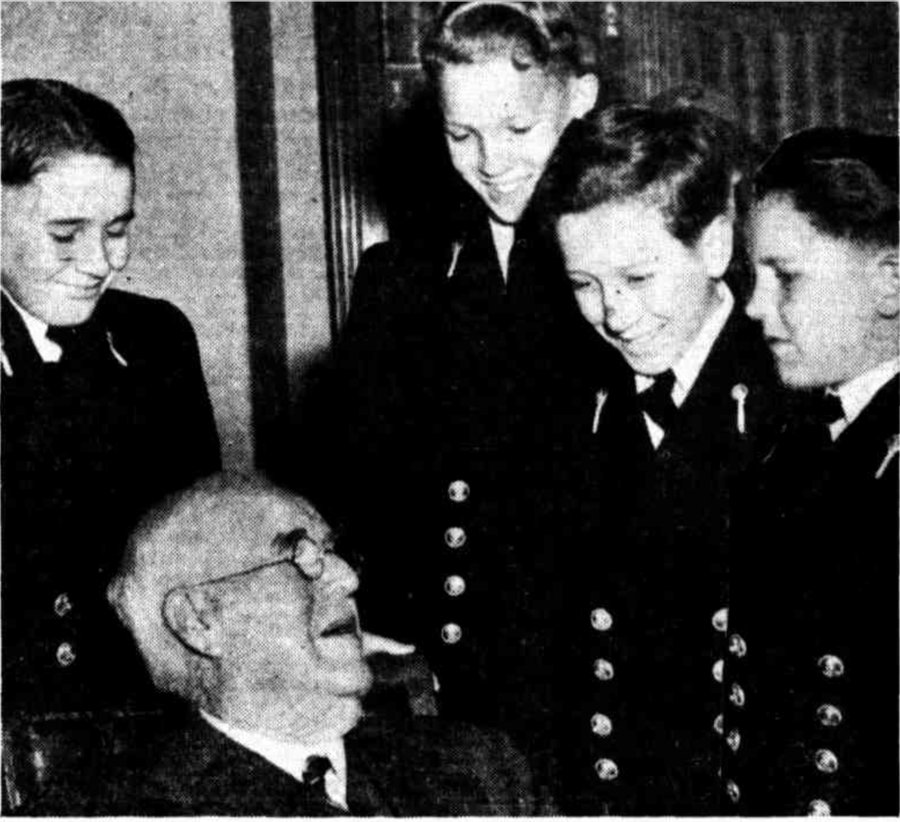
Cadet midshipmen home on leave call on the Governor, Sir James Mitchell, May 1951. Left to right: Kevin Bale, Lawrie Frankish, Edward Brownfield and Neville Hawtin.The West Australian, 24 May 1951, via Trove.
Lawrie married Phyllis Parkinson at Gladysdale in 1958, and they began on a small dairy farm there that they called Marston Park. In 1962 they sold it and moved to a much bigger dairy at Murrabit, towards Gonn Crossing on the Murray River plains north of Kerang, milking up to about 100 cows. Merrilee grew up there. In January 1974 they bought a 3,000-acre grazing property at Tara on Queensland's Western Downs, which they called Marston, and they ran the tyre service in town. Their last farm, at Mareeba, was Marston Farm.
The name Marston carries the family's own account of where they came from, and part of it can now be pinned down. Phyllis tells it this way: the Frankishes were Huguenots, Protestants from near Flanders who left Catholic France for England more than 300 years ago, and the name Frankish marks them as people from over there. Later, she says, the family farmed on Marston Moor in Yorkshire, scene of the great Civil War battle of 1644, where ploughing turned up bones and skulls, and they lost that farm in a foot-and-mouth epidemic, when no compensation was paid. The records fit the setting. Our own Frankish line is found at Marshchapel and Caistor in Lincolnshire from the 1650s. Caistor is close to the Isle of Axholme, where some 80 Huguenot families from Walloon Flanders settled at Sandtoft in 1628 to drain Hatfield Chase. The surname itself, though, was in north Lincolnshire long before, from the 1550s. And the farm on Marston Moor was real, on Emily's side. Emily Wetherall was born at Marston in 1863, and in the 1871 census her father Robert, 37, was farming there with Anne and their six children, among them Emily, 7, and her little brother Jesse. Her brother Walter followed her to Western Australia. Lawrie carries the Wetherall name as his middle name, and his farms carried Marston.
Chapter five
A doctor, a brooch and the Upper Yarra
1770 – 1961
Phyllis's side began reaching Australia early, on at least six ships between 1841 and 1857. The most colourful arrival was Dr Charles Houlton Webb, a London surgeon who sailed to Adelaide on the Hooghly in 1848, leaving his wife behind. A fellow passenger called him disagreeable. In 1849 he married again, to Elizabeth Meyler, who had come out on the same ship. He became the first doctor of Clare, ran its inn, and was mayor when he died in 1870. His own father, the Reverend Richard Webb, had been a Minor Canon of St George's Chapel at Windsor Castle.
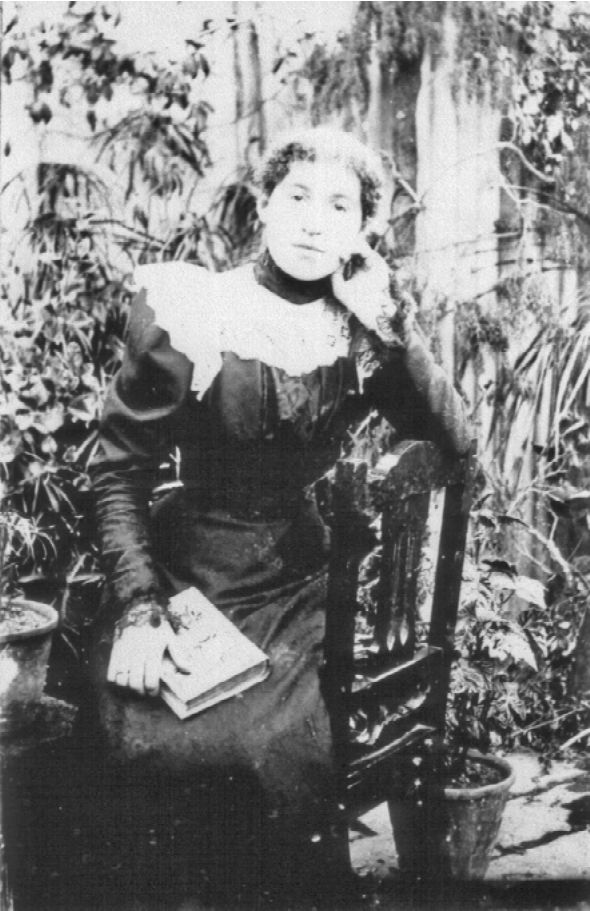
Mabel Ann Webb, the doctor's granddaughter, at eighteen. Her brother, a Prahran jeweller, made her a crescent-moon brooch that Phyllis still keeps.From Webb of Intrigue, by Norman Ernest Smith.
Mabel married Ern Smith, a Prahran painter and paperhanger, against her family's wishes. Around 1911 they moved to Hoddles Creek in the hills east of Melbourne. Their daughter Alma married Ben Parkinson there in 1935, and her sister Elsie married Ben's brother Don. The two couples lived side by side at Gladysdale, and the brothers worked in the timber mills all their lives. Ben and Don had three older sisters, Olive, Doris and Ivy, all born at Alexandra. Their mother, Martha Wilson, came from Diamond Creek, where her father Joseph had settled; her mother's family, the Whatmoughs, were from Rochdale in Lancashire.
Their father, William George Parkinson, was Grandpa Parky, and the family remember him as notorious rather than notable. Born at Greendale in 1877, the second of George William Parkinson and Emily Browell's six children, he enlisted in Melbourne in July 1915, a married labourer giving his age as 36, and sailed that October with reinforcements for the 14th Battalion. His service file has him in the camps on Salisbury Plain from 1916, in and out of hospital. On 26 July 1917 he walked out of camp at Codford and stayed away for two years. A court martial at Sutton Veny in September 1919 found him guilty of absence without leave, and he was discharged at home that December. Martha had moved with the boys to Hoddles Creek in 1917. The family remember that his desertion left her and the children without income, and that he fought in France and was evacuated; perhaps, after France, he could not face going back. He turned up again in the 1930s. Phyllis remembers seeing him on visits to her grandmother, and Ben and Don would barely acknowledge him. He outlived Martha by eleven years and died at Highett, in Melbourne's south-east, in 1960, aged 83.
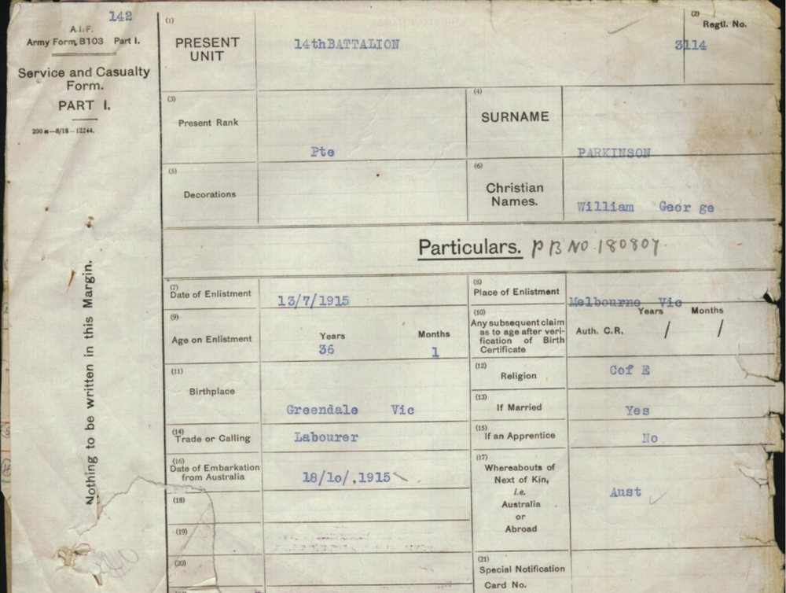
William George Parkinson's service form: enlisted 13 July 1915 at Melbourne, age given as 36, born at Greendale, a labourer, embarked 18 October 1915.NAA: B2455, PARKINSON WILLIAM GEORGE.
1939
Black FridayOn 13 January 1939 bushfires swept the ranges of Victoria, including the Upper Yarra around Warburton. Phyllis was not yet three.
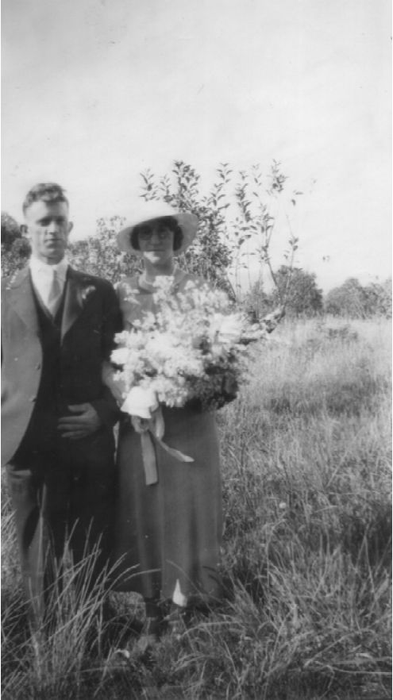
Ben and Alma on their wedding day, 6 April 1935.From Webb of Intrigue.
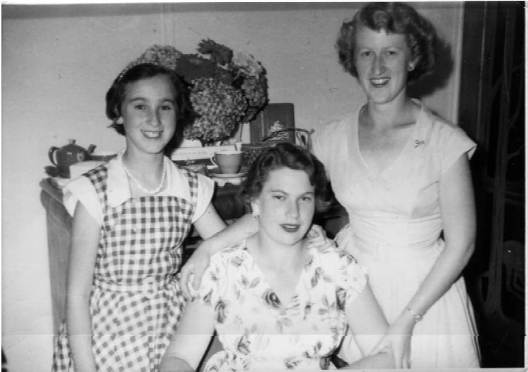
Pamela, Phyllis and Joan, about 1956.From Webb of Intrigue.
Chapter six · Claire's father's side
From the Frisian lakes to Queensland
1798 – 2021
Claire's Hazenbergs came from Friesland, the watery province of lakes and dairy farms in the far north of the Netherlands. Willem Hendriks Hazenberg was born in 1877 and grew up at Bergum. His son Taeke was born at Grouw, on the edge of the Frisian lakes, on 5 November 1910, and in 1933 he married Aukje Elzinga from the neighbouring village of Akkrum.
The name itself came from across the provincial border, in the Westerkwartier of Groningen. In 1798 Wiebe Willems of Grootegast married Aafke Gales of Niekerk, and they made their home at Leek. Wiebe died in the spring of 1809, about 33 years old; their youngest son was baptised a few weeks later with the note "the father has died". All five children took the surname Hazenberg when fixed names became law. The eldest, Willem, became a merchant, crossed into Friesland, and in 1839 married Anna Grabhorn from Oldenburg at Smallingerland. Their son Hendrik was Taeke's grandfather.
Taeke and Aukje's son Willem, named after his grandfather in the Frisian way, was born at Irnsum on 25 January 1936. His sisters followed: Aaltje in 1937, named for Aukje's mother, then Ietje and Janna. Willem was four when Germany invaded, and nine when the war ended.
The Johan van Oldenbarnevelt reached Fremantle on 4 October 1950 and landed the Hazenbergs at Sydney on 12 October: Taeke, 39, a cattleman; Aukje, 40; Willem, 14; and the girls, 13, 8 and 6.From the ship's passenger list, National Archives of Australia
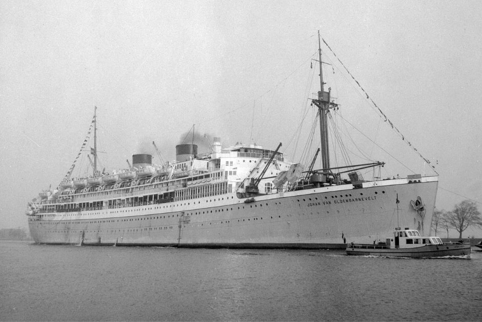
The Johan van Oldenbarnevelt in 1948, two years before she carried the Hazenbergs to Australia.Van Oorschot / Anefo, Nationaal Archief, CC0.
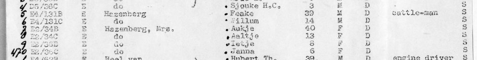
The family's lines on the passenger list: Taeke ("Feake"), Willem ("Willum"), Aukje, Aaltje, Tetje and Janna.NAA: K269, 4 OCT 1950 JOHAN VAN OLDENBARNEVELT.
Back in Friesland the family had owned a dairy farm near Leeuwarden, and they came out without a single friend in Australia. They spent their first year at Monto, inland in the Burnett, before settling at Springfield Road, Bundaberg. In April 1955 Bill, 19 and already a driver at Fairymead, was the youngest of nine Bundaberg new Australians given Rotary agricultural scholarships for a twelve-day course at Gatton College; all nine hoped to have farms of their own in the district one day. On the last day of 1957 the Bundaberg News-Mail announced the engagement of Willem, now Bill, to Nancy Joan Hodgetts, known as Meg, second daughter of Mr and Mrs E. Hodgetts, from a big Bundaberg-district family of eight children. They married at the Barolin Street Methodist Church on the afternoon of Saturday 7 February 1959. Taeke, Aukje and their daughter Ietje became Australians together at the Rowers Hall in January 1959. Bill worked the cane: he was a driver on Fairymead Plantation when he was naturalised in June 1961, and in 1964 he drove the Bundaberg-built Scott Harvestall harvester in trials near Mackay, where it cut a patch of tangled, flattened cane that onlookers had called impossible.
Bill and Meg had Joanne, Gail and Trevor. Meg later married Kevin Wills and lived at Gin Gin, where the family remember her running a corner grocery store; she died in Bundaberg in 2021.
Taeke died in Bundaberg in 1987 and was buried in the lawn section of the city's General Cemetery. Aukje spent her last years at Fennell Bay on Lake Macquarie in New South Wales; when she died in 1994 she was brought back to Bundaberg and buried in the same grave.
Meg's parents, Everard Hodgetts and Amy Louisa Haken, married in 1934 and raised their family around Bundaberg and Gin Gin. Everard's mother, Rosetta Maud Bastock, was a Birmingham girl, born at Aston in 1878, who came out to marry Joseph Hodgetts. They farmed at Rosedale, then ran the strawberry gardens at Newtown in Bundaberg, a favourite spot for parties and outings, and raised seven sons and six daughters. When Rosetta turned 80 in 1958 her family filled the Coronation Hall; she had 44 grandchildren and 19 great-grandchildren. Amy's parents were Gordon Haken and Mary May Tudman, from two families settled in Queensland for a generation: John Tudman, a Norfolk man who arrived in 1864, married Emma Pearson in Brisbane in 1869, and George Haken married Grace Redman in 1877. Grace was very probably born Louisa Mitton, a wireworker's daughter from Lincoln, and in later life she was the stationmistress at Eudlo. Everard and Amy lie together in the Bundaberg General Cemetery.
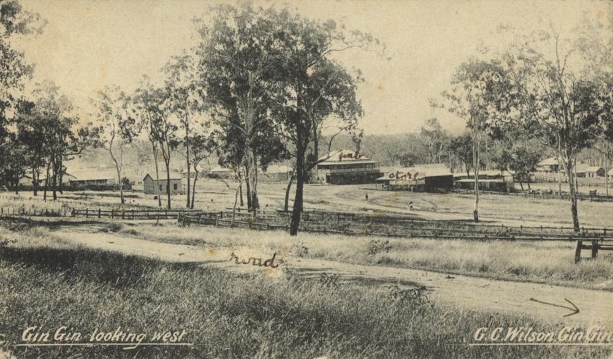
Gin Gin, looking west, about 1906, the year Everard Hodgetts was born. He was still living there when he died in 1994.Postcard by G. C. Wilson, Gin Gin. State Library of Queensland, public domain.
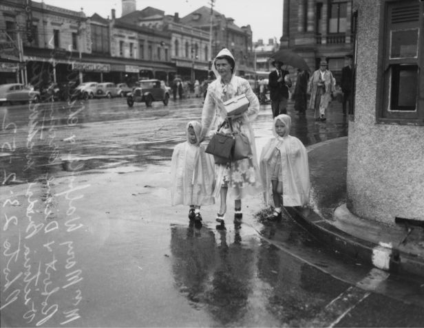
Queen Street, Brisbane, on a rainy day in 1952, the year Bill's immigration file was opened in the city.State Library of Queensland, public domain.
1950
In the worldDutch emigration to Australia was gathering pace. The Netherlands–Australia Migration Agreement was signed the following year, and between 1947 and 1971 about 160,000 Dutch people emigrated to Australia.
The family also keeps a chart of another branch of the name: the Hazenbergs of Groningen, brick manufacturers, among them Aldert Hazenberg, an Officer of the Order of Orange-Nassau. Bill's own records lead to Friesland instead, and no link between the two branches has been found.
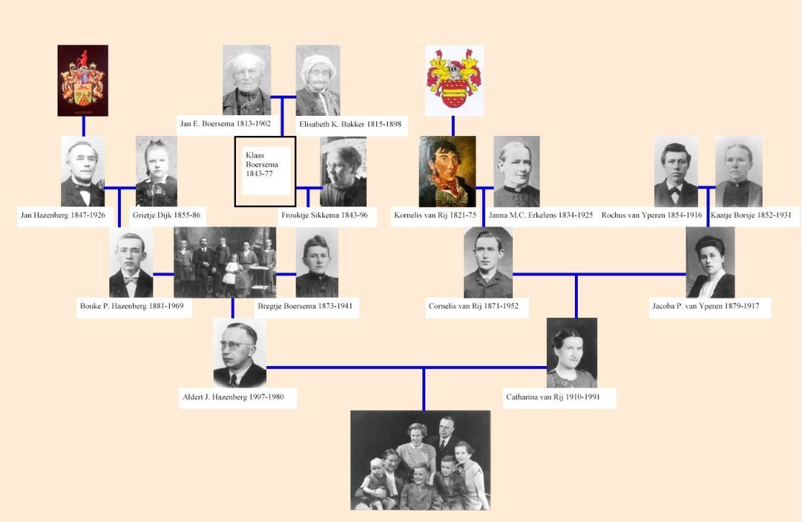
The Groningen Hazenberg chart kept by the family.Family collection.
Chapter seven · Claire's mother's side
A childhood in New Guinea
1900 – 1957
Beverly's grandparents were English migrants. George Herbert Brazier was born at Wilton in Wiltshire in 1860, a plumber's son, and Ellen Baldwin at Bosmere in Suffolk in 1864; they married in Brisbane in 1893. On her mother's side, Frank Warbrick came out from Oldham in Lancashire in 1874, a two-year-old on the immigrant ship Zoroaster with his widowed mother, his sister Lucy and his brother Ernest. His mother died at sea a month before the ship arrived, and the three children landed at Brisbane as orphans. Frank married Adele White in Brisbane in 1899; her mother, Mary McGregor, was very probably born in Glasgow.
Bruce Wilton Brazier, named after his father's home district, was born at Toowoomba on 14 February 1900 and went to Brisbane Grammar School. He enlisted at the very end of the First World War, and in September 1927 was appointed a clerk in the New Guinea service, a job he held for nearly thirty years. He married Aileen Warbrick at Scots Church, Clayfield, on 27 November 1929. She wore white and silver with a veil of Honiton lace, the reception was at Ryecroft, her mother's house in Bayview Terrace, and they honeymooned at Tweed Heads. On 19 May 1930, after a round of farewell teas, she left to join him.
Aileen joined Bruce at Kokopo, on the coast twenty miles from Rabaul. Early in 1932, after eighteen months there, the couple came down to Brisbane on a long visit and stayed with her mother at Clayfield. The Telegraph interviewed Aileen for its women's page about housekeeping in the tropics: no income tax and cool nights, but only silent pictures, few books, and no permanent waves, since the only barber was Chinese and had never learned the method. A household kept three house boys, one for the house, one to cook and one to wash. They sailed back on the Tanda in July.
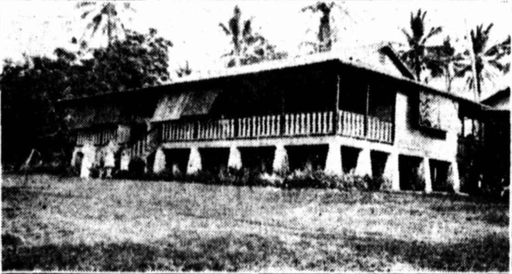
“A bungalow at Kokopo”, printed with Aileen's interview in the Telegraph, 4 April 1932.The Telegraph (Brisbane), 4 April 1932, p. 11, via Trove.
Their daughters Margaret and Beverly were born in 1932 and 1933. The Pacific Islands Monthly staff lists track his postings: Rabaul to Kieta on Bougainville in November 1935, a promotion in January 1936, and Rabaul to Kavieng in May 1938. Over the years the family lived at Rabaul, Kokopo, Kieta, Kavieng and Wau; in June 1940 Aileen and "her two little girls" came down from Kavieng, New Ireland, to stay in Clayfield.
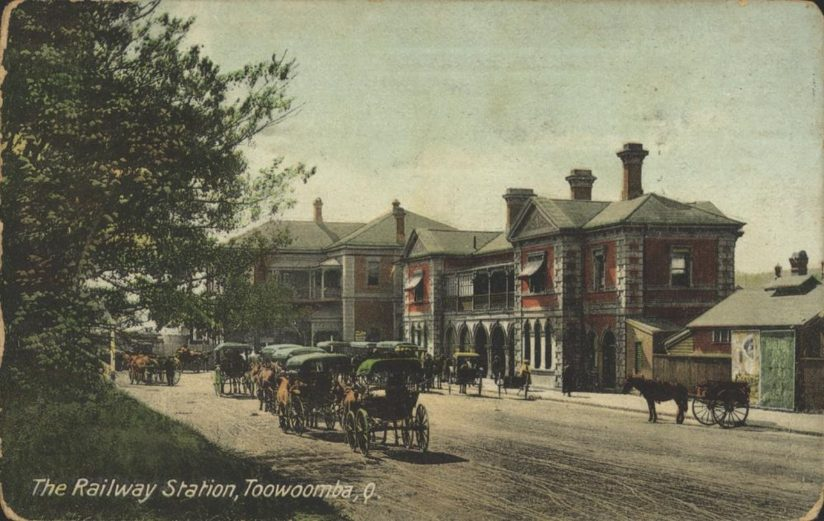
The railway station at Toowoomba around 1900, the town where Bruce Brazier was born.State Library of Queensland, no known restrictions.
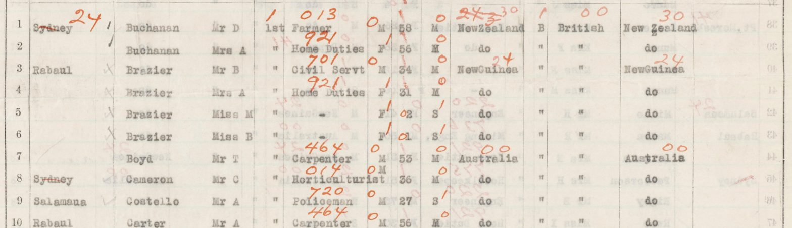
The Montoro, arriving at Brisbane from Rabaul on 2 September 1934: Mr B. Brazier, 34, civil servant; Mrs A., 31; Miss M., 2; and Miss B., 1. Beverly is on line 6.NAA: A907, 1934/9/68.
1937
Rabaul eruptsIn May 1937 two volcanoes erupted beside Rabaul, where Bruce had been based, burying the town in ash. The Territory's capital later moved to Lae.
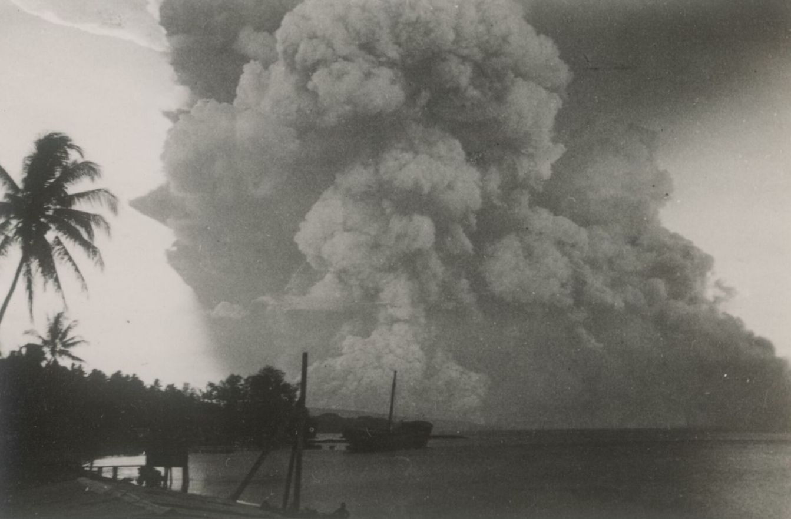
Ash raining down on Rabaul during an eruption.KITLV, CC BY 4.0, via Wikimedia Commons.
On 12 December 1941, days after Pearl Harbor, the War Cabinet ordered every European woman and child out of Papua and New Guinea. Burns Philp ships such as the Macdhui, Neptuna and Malaita carried them south, often with a few hours' notice. Beverly was eight. In April 1942 Pacific Islands Monthly printed the full list of evacuees and their Australian addresses; the family appear as Mrs A. Brazier and three children, care of Aileen's mother in Doncaster Street, Hendra. By then Rabaul had fallen to Japan, and by 1943 the family's home was Balfour Road, Rose Bay, in Sydney.
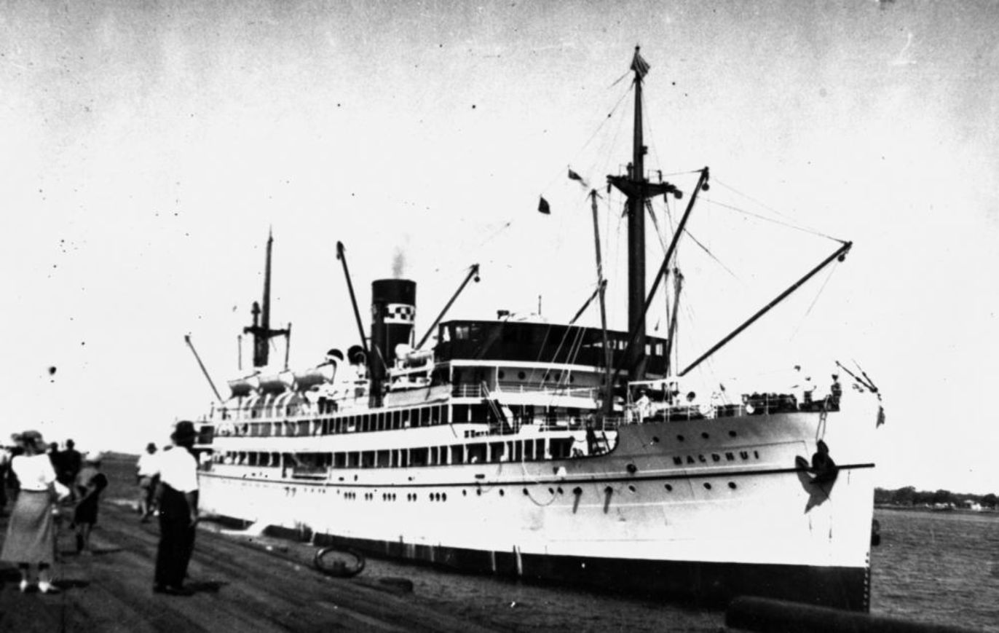
The Macdhui, one of the Burns Philp ships that carried women and children south in December 1941.State Library of Queensland, public domain.
Bruce enlisted again in Sydney on 22 November 1943, aged 43. He was posted to ANGAU, the Australian New Guinea Administrative Unit, which ran the territory behind the fighting, and served 517 days in New Guinea as a Warrant Officer. In January 1945 Pacific Islands Monthly, which knew him as Bill, reported "Bill Brazier (Rabaul and Wau)" among the old New Guinea hands serving near Finschhafen. He was discharged in April 1946, with three children under sixteen at home.
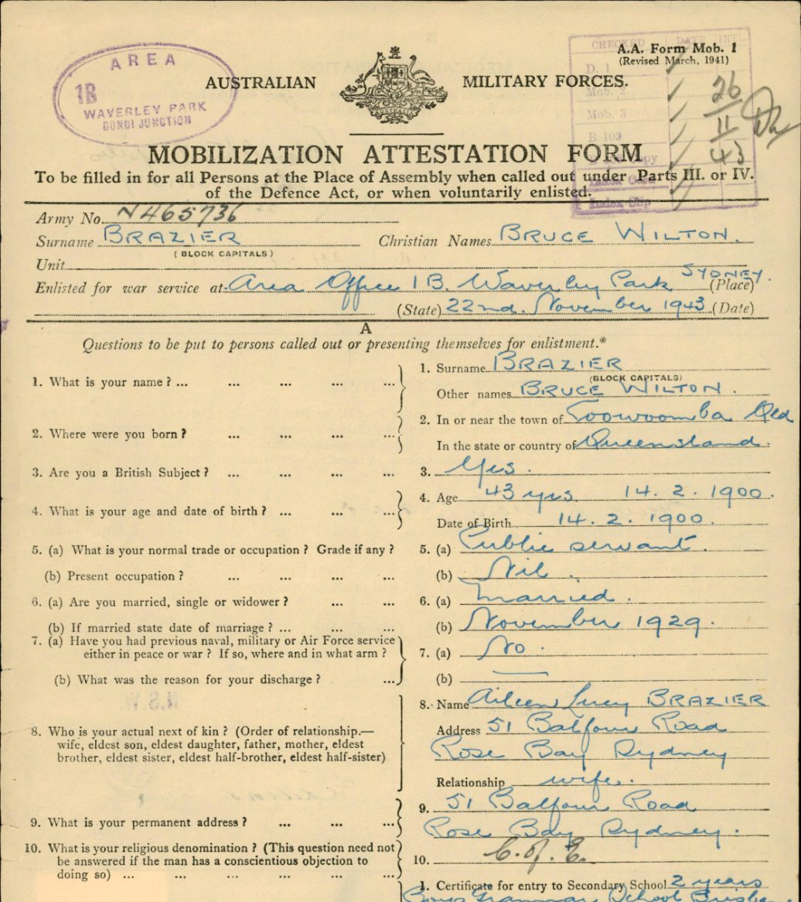
Bruce's attestation form, Waverley Park, Sydney, 22 November 1943.NAA: B884, N465736.
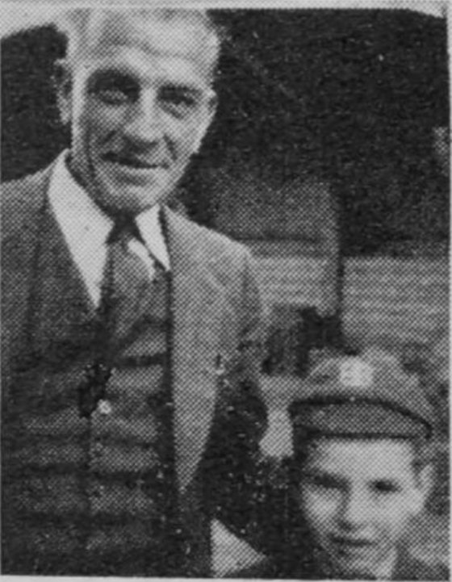
"Mr. B. W. Brazier, of Treasury Department, Port Moresby, returning after leave in Australia." Sailing on the Bulolo, August 1948. The boy beside him is not named.Pacific Islands Monthly, 1 September 1948, via Trove.
After the war the family went back to New Guinea, and Bruce to the Treasury at Port Moresby. In August 1948 he sailed north after leave on the Bulolo, another Burns Philp ship, and in June 1949 he flew to Daru on Treasury business on one of Qantas's new Catalina routes. On 2 January 1951 Bruce and Aileen, with Beverly, 17, Margaret and young Bruce, landed at Brisbane from the Bulolo. Margaret made her debut at the Michaelmas Ball in Port Moresby that November. Bruce became a Paying Officer for the Territory in 1953 and a Receiver of Public Moneys in 1957, still at Port Moresby.
On 1 November 1951 the Courier-Mail announced Beverly's engagement to Doug Hymus, “younger son of Mr and Mrs F. E. Hymus, Charters Towers”. Doug was born at Cooroy in 1927 and had joined the RAAF at 18 in the last months of the war. By early 1956 Beverly and Doug were living in Cairns with their first two children. One of their daughters, Sue, married Trevor Hazenberg; Sue and Trevor are Claire's parents, and Angus's grandparents.
That February, Beverly's mother Aileen was in Brisbane visiting her own mother, Adele Warbrick, at Hendra. She told the Telegraph that Port Moresby, with four or five frock shops and a beauty salon, was now a nice place to live. Her son Bruce, Beverly's younger brother, was 14 and boarding at Churchie.
The family also remember a connection with Nauru, another Australian-administered territory. Who went there, and when, is not yet clear: Bruce's own records keep him at Port Moresby until at least mid-1957.
The Hymus family had come out from England: Edward Charles Hymus, a farm labourer's son born in 1869 at Linton in Cambridgeshire, and Frances Horsford, born the same year in Dorset. Edward grew up at nearby Bartlow. They married in Queensland in 1895 and lie together in Toowong Cemetery. Their son, Doug's father F. E. Hymus, spent his working life with the Bank of New South Wales, moving from branch to branch across Queensland: Atherton and Cairns in 1916–17, Normanton in 1924, Cooroy in 1926, where Doug was born, Proserpine in 1935, Millaa Millaa in 1939, Bowen by 1945, and Charters Towers, where he was manager by 1950. Charters Towers was home ground for Saddie: her parents, Robert and Ethel Napier, had settled there after many years in Townsville, and her mother was still living there when she died in 1953. Robert was born at Liverpool in New South Wales in 1860, the son of a tailor from Largs on the Clyde.
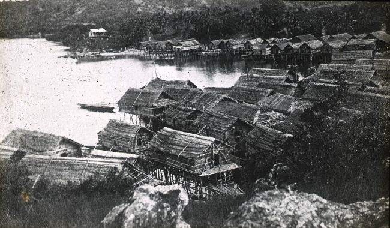
Hanuabada, the stilt village on the harbour at Port Moresby, on an early lantern slide.Callaway Special Collections, public domain.
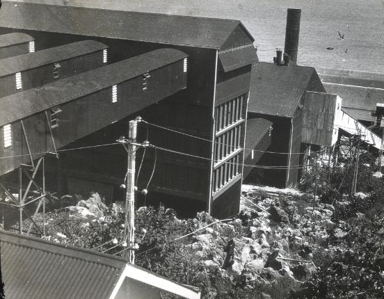
The phosphate works on Nauru.Callaway Special Collections, public domain.
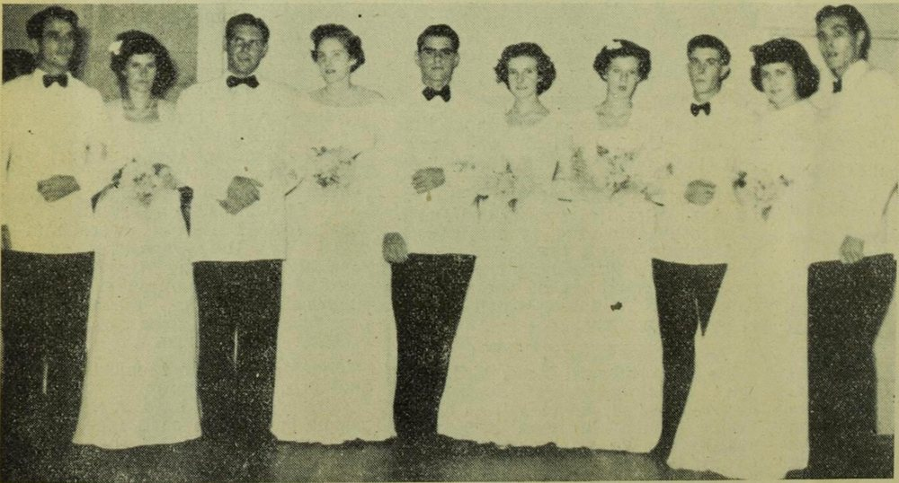
The five debutantes of the Michaelmas Ball, Port Moresby, 1951, with their partners: Ann Frith, Margaret Brazier, Margaret Gracie, Peg Smith and Patrice Drewe.Pacific Islands Monthly, 1 November 1951 (Papuan Prints), via Trove.
Chapter eight
Where the roads meet
Mount Isa to Mareeba
One line crossed the world in a single voyage; the other moved across Australia over three generations, from the goldfields to Melbourne, the Murray, the Western Downs and the Tableland. The two lines came together in the mining town of Mount Isa, where Greg Broesder met Merrilee Frankish. They moved to Cairns, where Rory was born, and then to Mareeba, where he grew up and where Lawrie and Phyllis farmed.
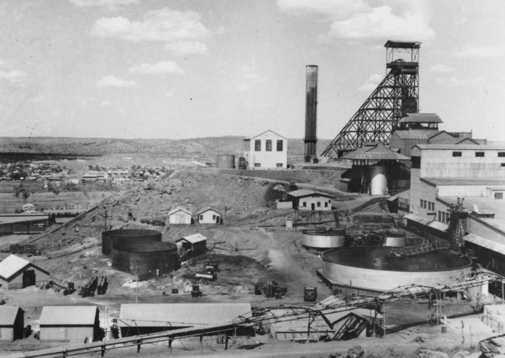
The mines at Mount Isa in 1954.State Library of Queensland, public domain.
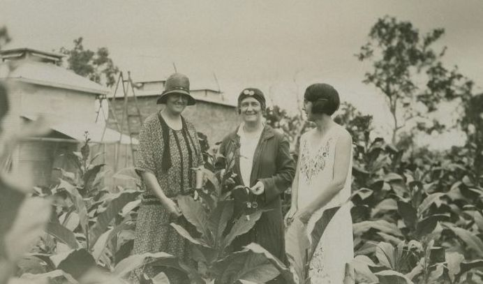
Inspecting the tobacco crop at Mareeba, about 1938.State Library of Queensland, no known restrictions.
Rory married Claire Hazenberg, whose families had come by different roads again: a Frisian family who sailed in 1950, and a girl who grew up in New Guinea. Their children, Angus and his little sister Elke, born in November 2026, are where all of them meet.
The map
How each family got here
Pick a family line, then step through it with Next. Each stop is one generation, oldest first, following the line from parent to child until it reaches Angus and Elke.